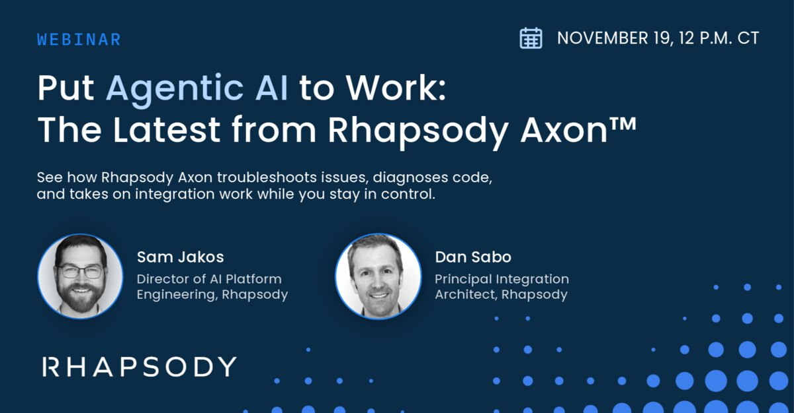

The social graphic that promotes a webinar or live event, built from the approved promo for “Put Agentic AI to Work: The Latest from Rhapsody Axon™” (November 2026). Use it for webinars, virtual events, and speaker sessions on LinkedIn and other feeds.

examples/social/ in the design system repository.| Element | Treatment |
|---|---|
| Canvas | 1200 × 627 (LinkedIn link and feed image), navy #0B2C47, about 56px side margins |
| Eyebrow | IBM Plex Mono Medium, about 22px, all caps, 0.17em tracking, light blue #B4D8FF |
| Date and time | IBM Plex Mono, about 22px, all caps, white (“NOVEMBER 19 · 12 P.M. CT”), after the calendar icon from the FY27 library (white glyph colored light blue), about 32px |
| Headline | Poppins Medium, about 52px, line height 1.2, white, one light-blue phrase, sentence case, two lines at most |
| Description | Poppins Regular, about 22px, white, two lines at most |
| Speakers | Headshots about 130px across in a 3px Rhapsody Blue ring; name Poppins Medium about 22px, white; title and company Poppins Regular about 19px, two lines at most |
| Logo | All white, about 290px wide, bottom left |
| Dots | An approved fluid dot master, bottom right, bleeding off two edges; never cropped through the core, never behind copy or portraits |
Three details in the reference example are adjusted to match the rest of the system: the eyebrow is light blue instead of Rhapsody Blue (text on navy is white or light blue); the headline is sentence case instead of title case; and the date is set in the mono, since capitals are reserved for mono labels.